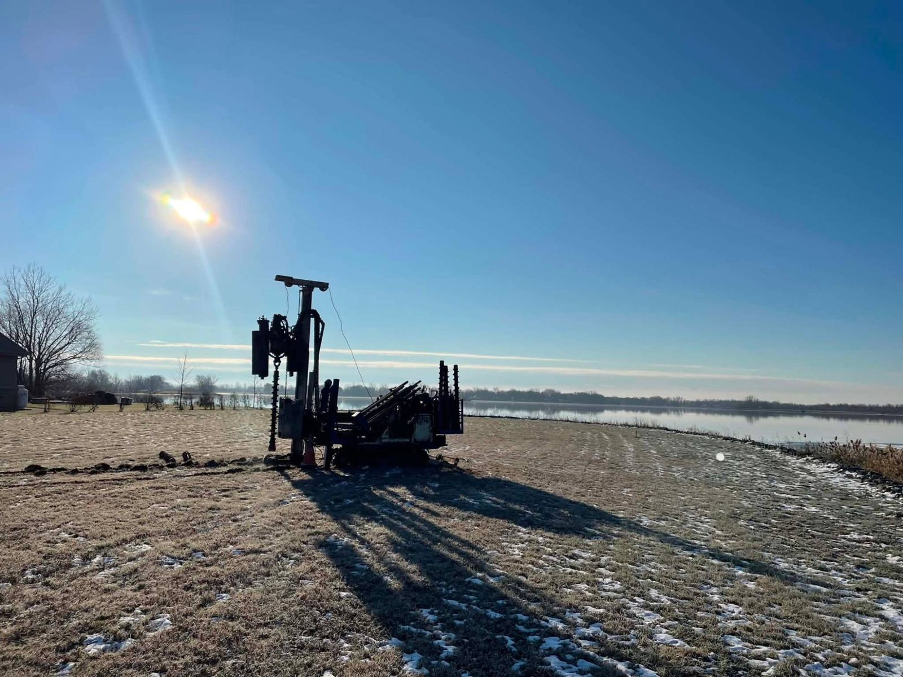
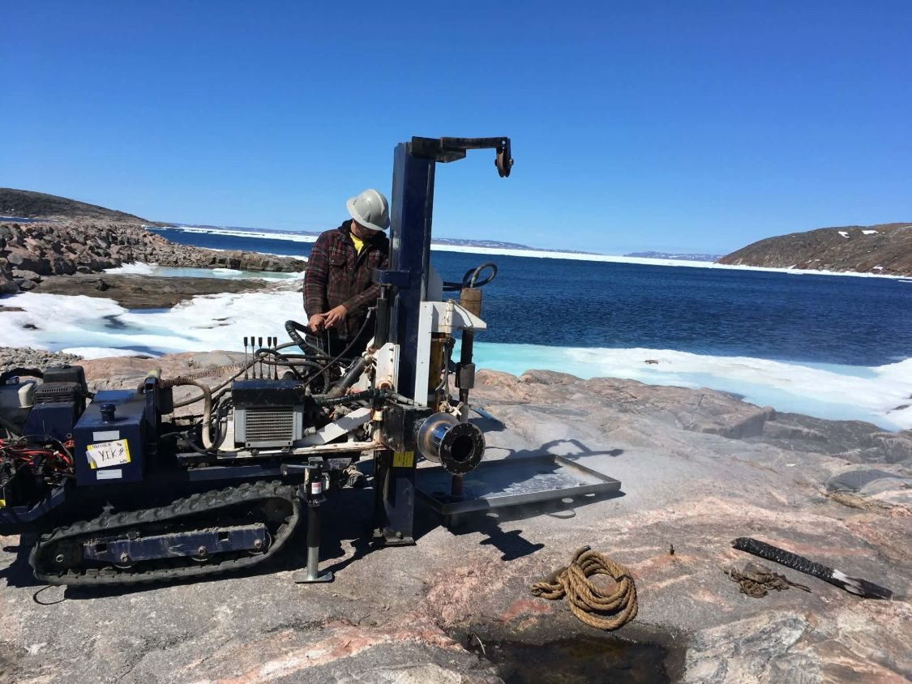
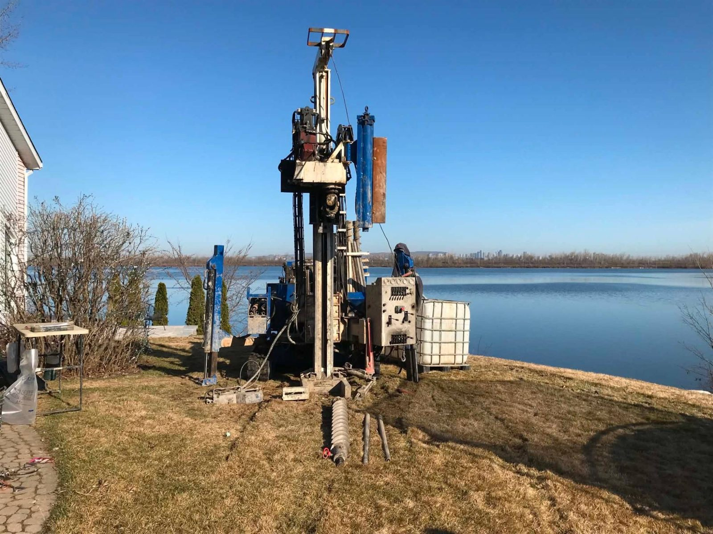
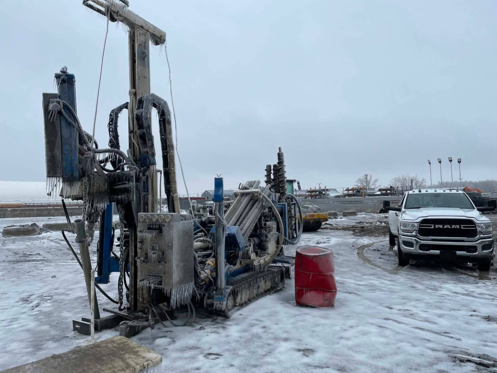
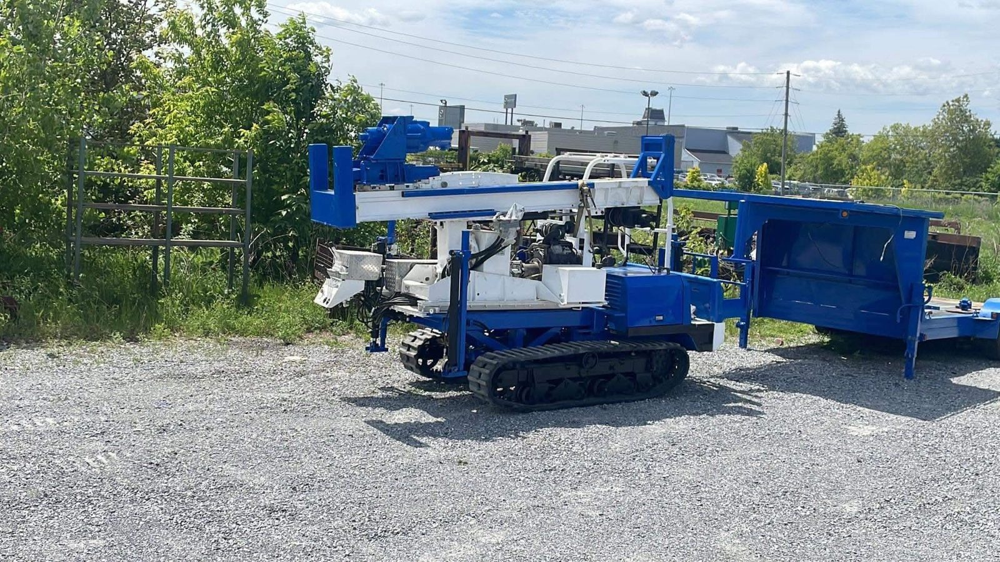
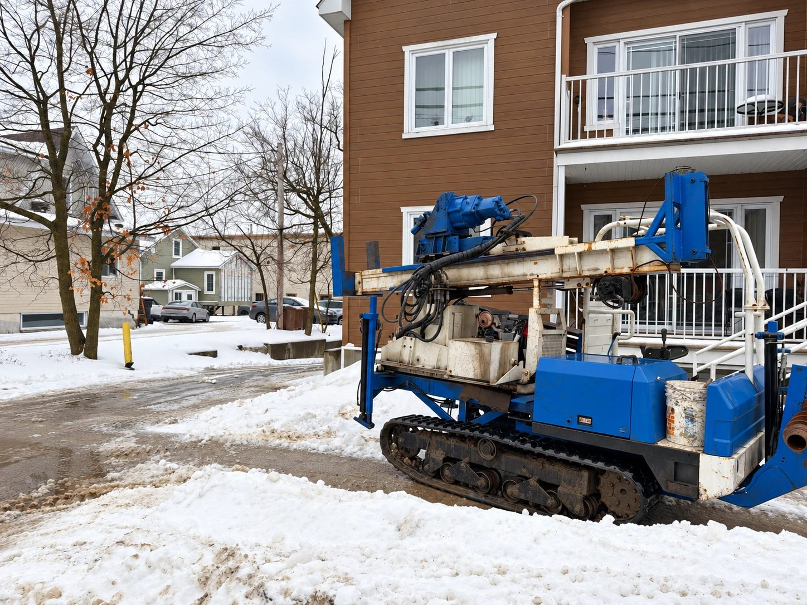
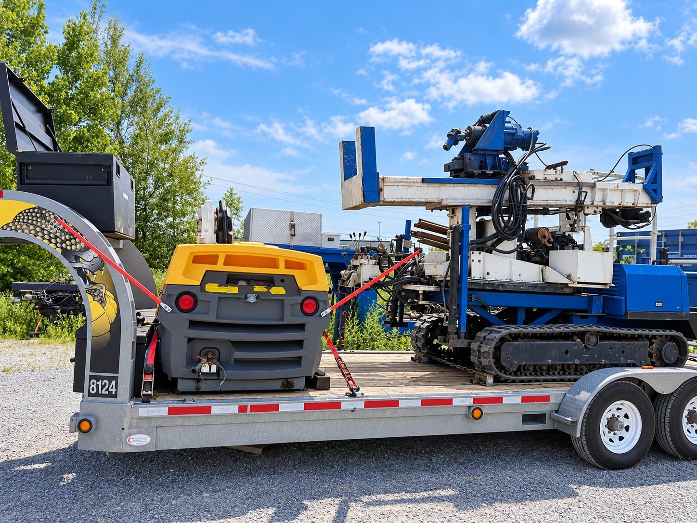

Équipement
Trois foreuses, trois façons de forer
De la plus compacte à la plus puissante : chaque machine a sa spécialité. Voici comment choisir celle qui convient à votre chantier.




GG1
La plus compacte
Spécialisée en droit restreint : elle passe là où les autres foreuses ne passent pas, à l'intérieur comme sur les sites éloignés.
- Sous-sols, commerces et bâtiments industriels
- Cours arrière et terrains étroits
- Sites isolés, installée directement sur le roc

GG2
La plus grosse
Notre foreuse pour les travaux géotechniques de tous genres, des terrains résidentiels aux grands chantiers.
- Tarière évidée et essais de pénétration standard
- Carottage du roc
- Tubes à paroi mince, scissomètre et piézomètres
- Été comme hiver, verglas compris






GG3
Environnement et forage à l'air
Spécialisée en environnement, elle réalise aussi les installations par forage destructif à l'air.
- Échantillonnage de sols et puits d'observation
- Installations par forage destructif à l'air
- Voyage sur remorque avec son compresseur
Pas certain de la bonne machine?
Décrivez-nous le site : accès, type de sol, profondeur visée. On vous dit laquelle envoyer.